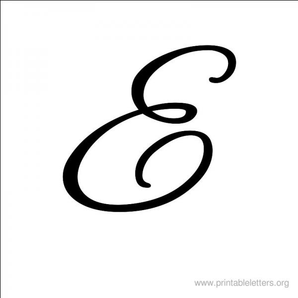

profile:
 tudiante en première année génie réseaux et télécommunications, je suis passionnée par le domaine informatique
en particulier les applications web et mobiles, je suis ponctuelle , attentive et ambitieuse .
education:
- 2017-2018 Elève ingénieur à l'ENET'COM Génie réseaux et télécommunications
- 2015 - 2017 Etudiante à l'IPEIS: Institut préparatoire aux études d'ingénieur de Sfax, section PC.
- 2014-2015 Diplôme de baccalauréat Admise au diplôme de baccalauréat section sciences expérimentales avec
mention bien.